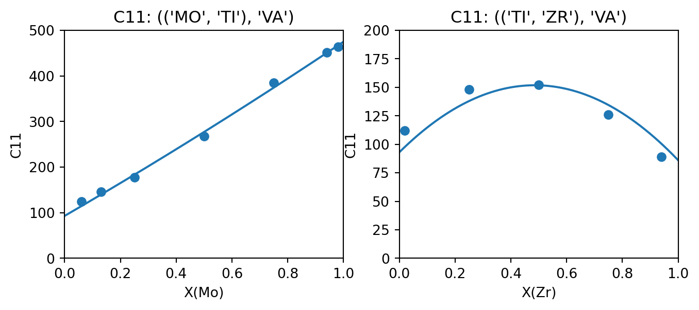
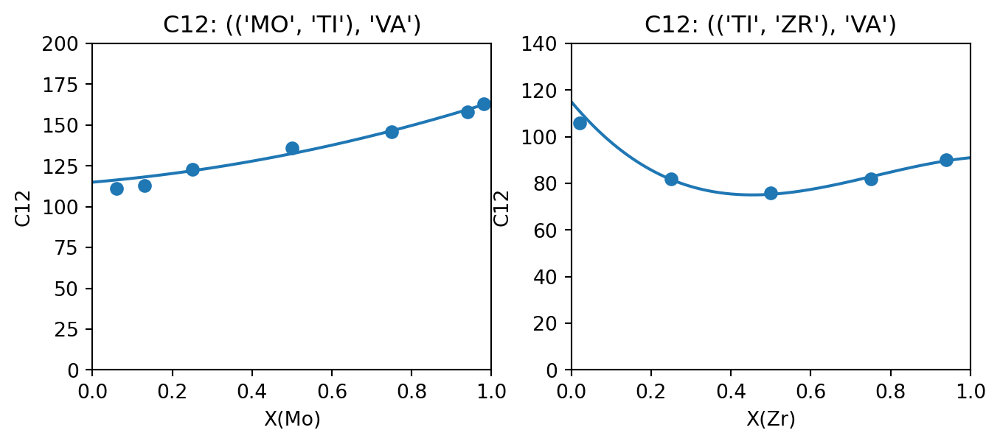
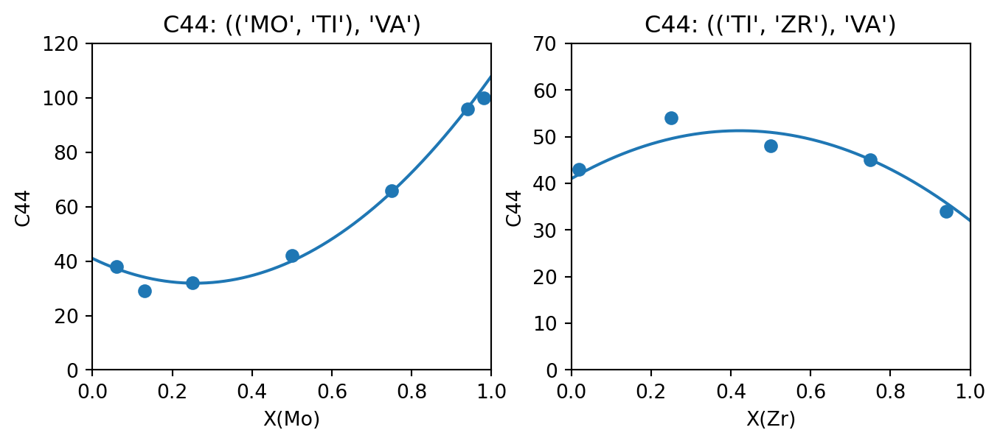

import tinydb
from pycalphad import Model
class ElasticModel(Model):
def build_phase(self, dbe):
super().build_phase(dbe)
phase = dbe.phases[self.phase_name]
param_search = dbe.search
for prop in ['C11', 'C12', 'C44']:
prop_param_query = (
(tinydb.where('phase_name') == phase.name) & \
(tinydb.where('parameter_type') == prop) & \
(tinydb.where('constituent_array').test(self._array_validity))
)
prop_val = self.redlich_kister_sum(phase, param_search, prop_param_query).subs(dbe.symbols)
setattr(self, prop, prop_val)Generating Custom Model Parameters
ESPEI’s default parameter selection capabilities support fitting Gibbs energy parameters (G parameters for endmembers, and L parameters for binary and ternary interations) from enthalpy, entropy, and heat capacity data. Using the parameter_generation.fitting_description parameter, ESPEI can support fitting different types of models and data too. For example, the built-in molar volume fitting description can be used to fit molar volume parameters (V0 and VA) to V0 and VM data (see fitting_description in YAML input schema for more details).
Through these fitting descrptions, ESPEI can be extended to fit custom PyCalphad models and model parameters without changing any of the source code for PyCalphad or ESPEI. Here we will implement a PyCalphad model for BCC elastic stiffness coefficients, which can be uniquly described by three independent components of the elastic stiffness matrix due to the cubic symmetry of the BCC phase. We'll then use DFT data from (Marker et al. 2018) to fit these endmember and interaction parameters and compare the result to values in the original publication. At the end of this tutorial, you will have used ESPEI to generated parameters for three types of elastic constant parameters using DFT data from the literature.
To run ESPEI and generate the output in this tutorial, download the files from GitHub.
Implementing the elastic constant model
Before we can fit parameters to data using ESPEI, we first need a PyCalphad model that can use the parameters. PyCalphad Model objects supports most of the typical Calphad model parameters that are implemented by the commercial Calphad software tools, but here we want to use model parameters that PyCalphad doesn't have built-in support for. The custom_elastic_model.py file contains the implementation of an ElasticModel class that sublasses the PyCalphad Model class:
This class overides the build_phase method of the Model class to add a property to class, one for C11, C12, and C44, where each property is modeled using a Redlich-Kister polynomial, following (Marker et al. 2018) Eq. (3). Note that redlich_kister_sum() gives us full generality for an arbitrary number sublattices and species in each sublattice.
Implementing a fitting description
The ElasticModel from the previous section is enough to PyCalphad to use C11, C12, and C44 in a PyCalphad Database object to do calculations and calculate those properties with equilibrium. Now we need to tell ESPEI how to use read datasets for C11, C12, and C44 data, and use this model to fit the corresponding parameters. The two concepts we need are a FittingStep and a ModelFittingDescription.
A FittingStep is an abstract class provided by ESPEI that defines an API for how to fit a particular type of data and what parameters describe it. There's a 1:1 relationship between a concrete FittingStep and a data type. Fitting steps also have a 1:1 relationship with a parameter type, but note that multiple fitting steps can be used to different data types to a single parameter type. For example, Gibbs energy parameters (G) are fit in three fitting steps: heat capacity data (CPM), then entropy data (SM), then enthalpy data (HM). Below are the implementations for each of the three elastic parameters and data. We are using the AbstractLinearPropertyStep helper class from ESPEI, which is a convience class to make it easier to define FittingStep classes that are 1:1 mappings between a data type and a parameter type and don't require and linearization or data/model transformation steps.
from espei.parameter_selection.fitting_steps import AbstractLinearPropertyStep
class StepElasticC11(AbstractLinearPropertyStep):
parameter_name = "C11"
data_types_read = "C11"
class StepElasticC12(AbstractLinearPropertyStep):
parameter_name = "C12"
data_types_read = "C12"
class StepElasticC44(AbstractLinearPropertyStep):
parameter_name = "C44"
data_types_read = "C44"A ModelFittingDescription defines a series of fitting steps that are fit in order, and a PyCalphad model that can use a the parameters to model that data. Here we'll combine the elastic fitting steps to fit them in order of C11, then C12, then C44. The order of fitting doesn't matter in this case since the models are independent, but more complex cases might have dependencies requiring certain contributions to be fit before others (e.g. V0 molar volume parameters need to be fit before VA parameters when fitting VM data). By default, ESPEI will use the base PyCalphad Model class, but since that class doesn't know how to use our custom elastic constant parameters, we need to use the model keyword argument to tell ESPEI to use this model.
from espei.parameter_selection.fitting_descriptions import ModelFittingDescription
elastic_fitting_description = ModelFittingDescription([StepElasticC11, StepElasticC12, StepElasticC44], model=ElasticModel)The elastic_fitting_description object that we created is the one we will pass to ESPEI via the parameter_generation.fitting_description input parameter.
Defining datasets
Parameter generation can only fit datasets of the same type of non-equilibrium thermochemical data, where the conditions and site fractions to generate the output value are provided explictly. Other than the "output" key that must match one of the data types read by one of our fitting steps, there are no additional steps for ESPEI to be able to read these datasets. See here for a complete description of these type of datasets. Here's an example for pure BCC Ti from the elastic-datasets directory:
elastic-datasets/1-unary/Ti/C11.json
{
"components": ["TI", "VA"],
"phases": ["BCC_A2"],
"output": "C11",
"values": [[[93]]],
"conditions": {"T": 298.15, "P": 101325},
"solver": {"mode": "manual", "sublattice_site_ratios": [1, 3], "sublattice_configurations": [["TI", "VA"]], "sublattice_occupancies": [[1.0, 1.0]]},
"reference": "Marker (2018)",
"bibtex": "marker2018binary_elastic",
"comment": "Values pulled from Table 4 (DFT calculations).",
"tags": []
}Running ESPEI
The phase models description defined in phase_model.json are the same as for regular runs of ESPEI:
phase_models.json
{
"components": ["MO", "TI", "ZR", "VA"],
"phases": {
"BCC_A2": {
"sublattice_model": [["MO", "TI", "ZR"], ["VA"]],
"sublattice_site_ratios": [1, 3]
}
}
}We provide ESPEI a fitting_description, which is either the object (for Python) or a fully qualified import string to our fitting description object (when running via the command line). In this case, we are importing the object elastic_fitting_description from the custom_elastic_model.py file in the local directory. Note that this can be any local module or an object from any package installed, for example if you have pip installed a package called my_fitting_descriptions that provides a ModelFittingDescrption object for your custom model called my_fit_desc, you would set fitting_description: my_fitting_descriptions.my_fit_desc. If you start a Python interpreter from the same place that you’ll run ESPEI, you can see if ESPEI can detect the fitting description by trying to import it, e.g. by from custom_elastic_model import elastic_fitting_description.
import json
from espei import generate_parameters
from espei.datasets import load_datasets, recursive_glob
from custom_elastic_model import elastic_fitting_description
with open("phase_models.json") as fp:
phase_models = json.load(fp)
datasets = load_datasets(recursive_glob("elastic-datasets"))
dbf = generate_parameters(phase_models, datasets, "SGTE91", "linear", fitting_description=elastic_fitting_description)The YAML file that generated parameters for the system described above with the elastic model is in generate_parameters.yaml.
generate_parameters.yaml
system:
phase_models: phase_models.json
datasets: elastic-datasets
generate_parameters:
excess_model: linear
ref_state: SGTE91
# This can be any module that is importable with Python.
# It can be something local to the directory where you run ESPEI, or provided
# by an package you have installed. To know if it will work, start a Python
# interpreter in the same place where you will run the ESPEI executable and
# try to do the import:
# >>> from custom_elastic_model import elastic_fitting_description
# if that works, then ESPEI should also be able to use it.
fitting_description: custom_elastic_model.elastic_fitting_description
output:
output_db: Ti-elastic.tdbNote the use of generate_parameters.fitting_description entry. This is the import path for the object and can be anything that can be imported by the Python interpreter that ESPEI is installed under.
We run ESPEI by running the command
espei --in generate_parameters.yamlThat’s it! You ran ESPEI via the Python code, you should have a Database object (or a Ti-elastic.tdb file if you ran via the command line) that has C11, C22, C44 parameters for pure Ti, Mo, and Zr, and interaction paramters for Ti-Mo and Ti-Zr.
Comparing the results
The following table compares the parameters fit by (Marker et al. 2018) and those generated by ESPEI. In all cases except for Ti-Zr C11, ESPEI generated the same number of parameters as assessed by Marker et al., where the C11 model is simpler in the version fit by ESPEI. Where the parameters generated are the same, they are close aside from some small differences that could be due to the weighting by Marker et al. (the data used in this tutorial are not weighted). Plots comparing the generated parameters (plotted as lines) in to the data (points) are generated using the appear to show good agreement.
| Param | Interaction | Ti-Mo | Ti-Zr | ||
|---|---|---|---|---|---|
| Marker (2018) | ESPEI | Marker (2018) | ESPEI | ||
| C11 | L0 | -22.16 | -27.7702 | 246.97 | 249.001 |
| L1 | 0 | 0 | -135.95 | 0 | |
| C12 | L0 | -36.40 | -27.9687 | -110.53 | -110.725 |
| L1 | 0 | 0 | -78.00 | -70.2764 | |
| C44 | L0 | -142.9 | -137.882 | 70.06 | 57.7446 |
| L1 | 0 | 0 | 0 | 0 |
Code
import matplotlib.pyplot as plt
import numpy as np
from pycalphad import calculate
from espei.core_utils import get_prop_data, filter_configurations, filter_temperatures, symmetry_filter
from espei.sublattice_tools import canonicalize
def compare_data_to_model(dbf, comps, phase_name, configuration, output_property, datasets, x_axis_component, ax):
solver_qry = (tinydb.where("solver").test(symmetry_filter, configuration, None))
desired_data = get_prop_data(comps, phase_name, [output_property], datasets, additional_query=solver_qry)
desired_data = filter_configurations(desired_data, configuration, None)
desired_data = filter_temperatures(desired_data)
# we know that there's only one dataset and they are directly the absolute values with no reference state to worry about
ds = desired_data[0]
exp_x_data = [occup[0][config[0].index(x_axis_component)] for config, occup in zip(ds["solver"]["sublattice_configurations"], ds["solver"]["sublattice_occupancies"])] # assumption about the sublattice model here
exp_y_data = ds["values"]
x_comp_config_idx = canonicalize(configuration, None)[0].index(x_axis_component)
num_points = 1001
calc_x_data = np.linspace(0, 1, num_points)
# assumption about the configuration being ((A, B,), VA)
points = np.empty((num_points, 3))
points[:, x_comp_config_idx] = calc_x_data
points[:, 1 - x_comp_config_idx] = 1 - calc_x_data
points[:, 2] = np.ones_like(calc_x_data)
calc_res = calculate(dbf, comps, phase_name, N=1, P=101325, T=298.15, output=output_property, points=points, model=ElasticModel)
calc_y_data = calc_res[output_property].squeeze()
ax.plot(calc_x_data, calc_y_data)
ax.scatter(exp_x_data, exp_y_data)
ax.set_xlabel(f"X({x_axis_component.capitalize()})")
ax.set_xlim(0, 1)
ax.set_ylabel(output_property)
ax.set_title(f"{output_property}: {configuration}")
output_property = "C11"
fig, (ax_TiMo, ax_TiZr) = plt.subplots(ncols=2, figsize=(8,3))
compare_data_to_model(dbf, ["MO", "TI", "VA"], "BCC_A2", (("MO", "TI"), "VA"), output_property, datasets, "MO", ax_TiMo)
compare_data_to_model(dbf, ["TI", "ZR", "VA"], "BCC_A2", (("TI", "ZR"), "VA"), output_property, datasets, "ZR", ax_TiZr)
ax_TiMo.set_ylim(0, 500)
ax_TiZr.set_ylim(0, 200)
fig.show()
output_property = "C12"
fig, (ax_TiMo, ax_TiZr) = plt.subplots(ncols=2, figsize=(8,3))
compare_data_to_model(dbf, ["MO", "TI", "VA"], "BCC_A2", (("MO", "TI"), "VA"), output_property, datasets, "MO", ax_TiMo)
compare_data_to_model(dbf, ["TI", "ZR", "VA"], "BCC_A2", (("TI", "ZR"), "VA"), output_property, datasets, "ZR", ax_TiZr)
ax_TiMo.set_ylim(0, 200)
ax_TiZr.set_ylim(0, 140)
fig.show()
output_property = "C44"
fig, (ax_TiMo, ax_TiZr) = plt.subplots(ncols=2, figsize=(8,3))
compare_data_to_model(dbf, ["MO", "TI", "VA"], "BCC_A2", (("MO", "TI"), "VA"), output_property, datasets, "MO", ax_TiMo)
compare_data_to_model(dbf, ["TI", "ZR", "VA"], "BCC_A2", (("TI", "ZR"), "VA"), output_property, datasets, "ZR", ax_TiZr)
ax_TiMo.set_ylim(0, 120)
ax_TiZr.set_ylim(0, 70)
fig.show()


References
Marker, Cassie, Shun-Li Shang, Ji-Cheng Zhao, and Zi-Kui Liu. 2018. “Effects of Alloying Elements on the Elastic Properties of Bcc Ti-x Alloys from First-Principles Calculations.” Computational Materials Science 142: 215–26. https://doi.org/doi:10.1016/j.commatsci.2017.10.016.